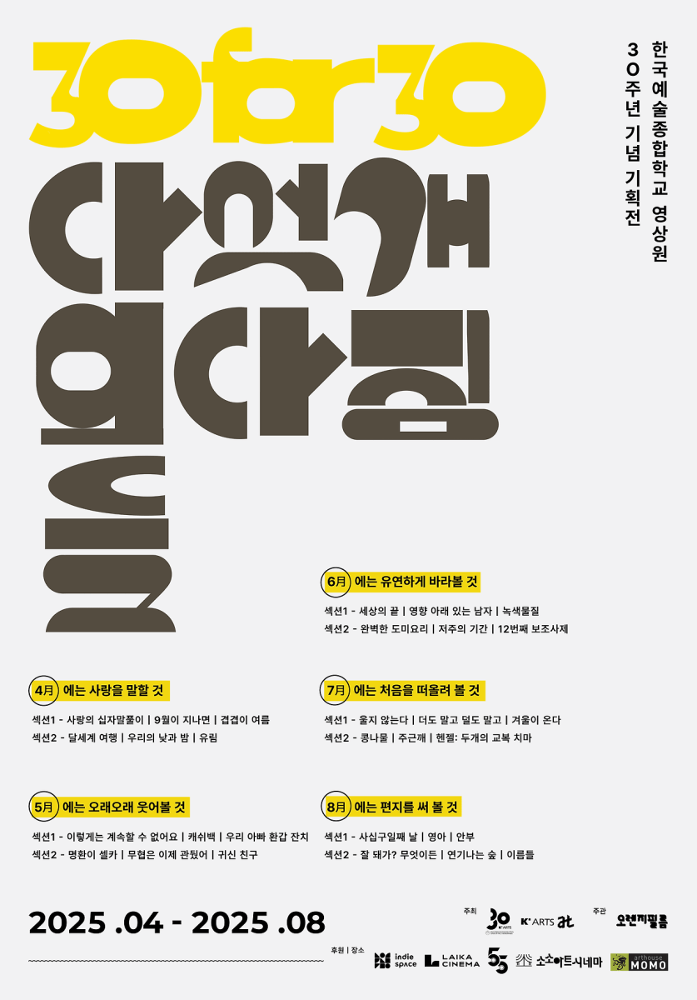

기획전 · 행사 · 기획전
한국예술종합학교 영상원 30주년 기념 기획전 30 for 30: 다섯 개의 다짐들 / 8월에는 편지를 써 볼 것 08/29(금)

‘다짐’이란 과거를 알고, 현재를 바라보며, 미래를 향해 나아가는 ‘시간’을 품은 단어 입니다. 연년세세(年年歲歲)* 영화계와 관객을 놀라게 했던 영상원 작품들을 다섯 개의 다짐이란 주제로 만나는 이번 기획전을 통해 30편의 단편을 새롭게 바라보고, 동시에 다음에 있을 영상원의 작품들도 기대할 수 있는 자리가 되기를 바랍니다.
8월은 편지를 써 볼 것라는 주제로 섹션 1은 부재하는 대상 곁에 있었던 ’우리‘의 모습을 통해 빈 자리, 남은 감정을 주목하게 만드는 강진아 감독의 <사십구일째 날>, 최아름 감독의 <영아>, 진성문 감독의 <안부>로 구성되어 있습니다. 섹션 2는 차곡 차곡 감정을 쌓아가지만 좀처럼 드러나지 않던 주인공의 진심을 가까이에서 바라보게 되는 경험을 통해 깊은 여운을 느끼게 하는 이경미 감독의 <잘 돼가? 무엇이든>, 이다현 감독의 <연기나는 숲>, 신이수, 최아름 감독의 <이름들>을 만나볼 수 있습니다.